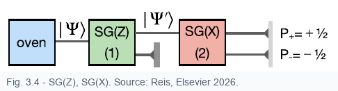
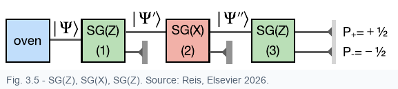

The order of measurements matters when the corresponding operators do not commute. The Stern-Gerlach sequences in this section show the physical meaning of that algebraic statement.
The commutator is
For the two spin components represented in the \(z\)-basis,
Nonzero commutator means the two observables cannot generally be diagonalized in the same basis.

After filtering the beam into \(|+\rangle\), an SG(X) device does not give a single certain result. Since
the probabilities are

If the \(x\)-up beam is selected, the state before the third magnet is \(|+\rangle_x\). Rewriting it in the \(z\)-basis gives
Therefore a final SG(Z) measurement again gives
The original certainty about \(z\) was lost because the intervening \(x\)-measurement prepared a new state.
Compatible observables can share eigenstates and be measured with sharp values in the same preparation. Incompatible observables force a choice of basis, and a measurement in one basis can disturb certainty in another.